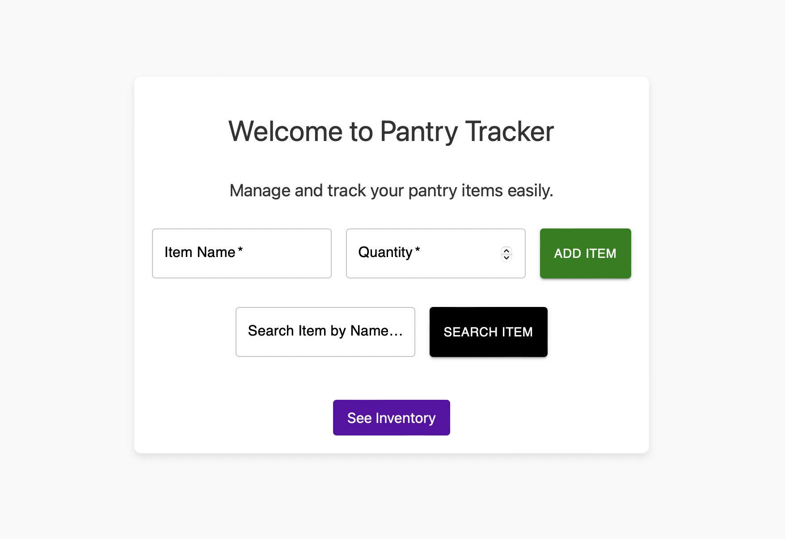
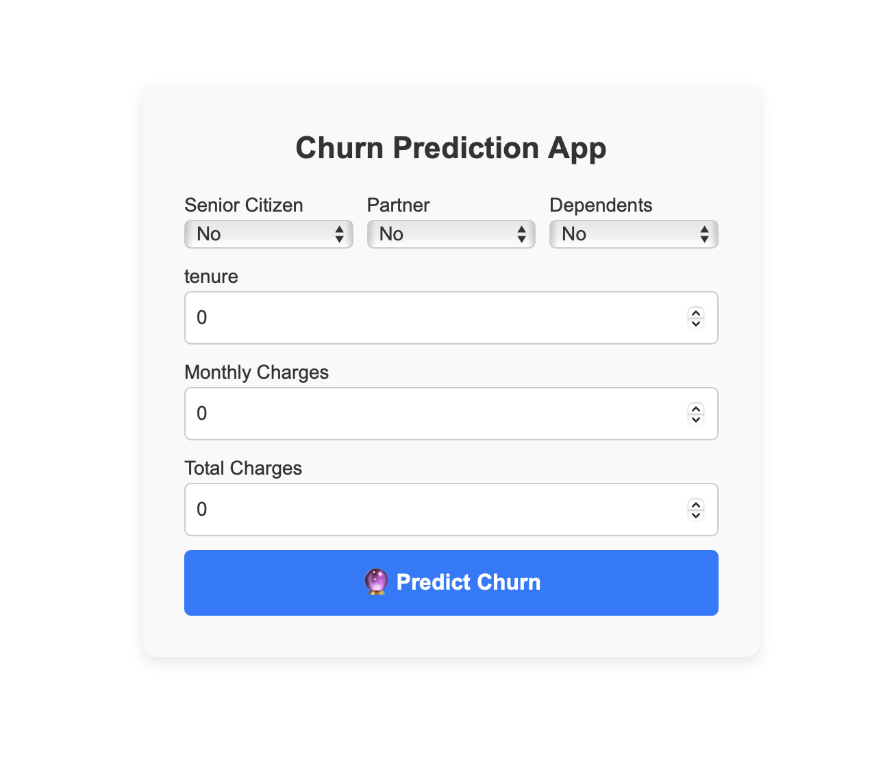

A dynamic and user-friendly web application built to simplify travel planning and itinerary management. The platform allows users to verify visa requirements and create itineraries, ensuring a hassle-free travel experience.

An intuitive web-based application designed to streamline inventory tracking and management for businesses. The tool enables users to add, update, and remove items, and categorize inventory efficiently.

A machine learning-powered web app that predicts customer churn with 90% accuracy. Users can input key customer details to receive real-time predictions and insights on churn probability.